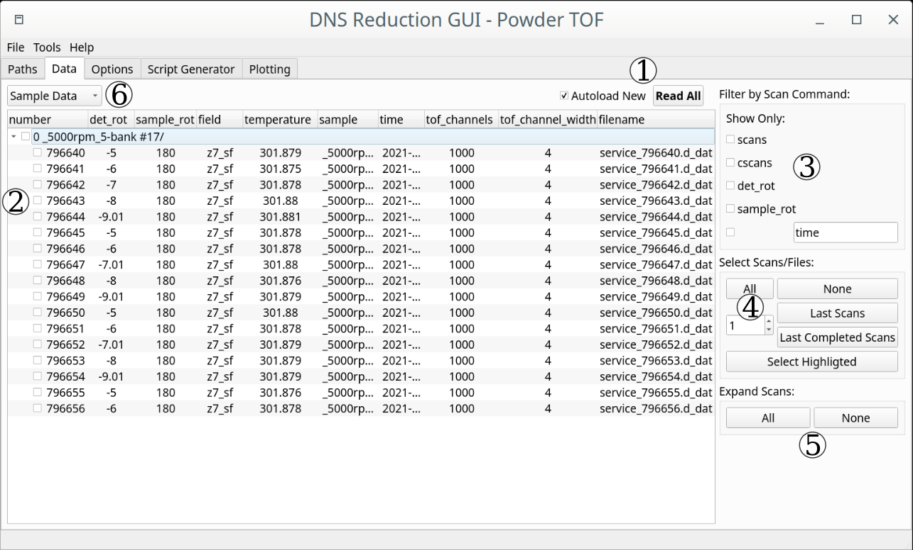

DNS Reduction - Data Tab#
{kind=link}

This tab is a file browser for the DNS data files.
(1) Click on the Sample Data button to select sample data files for reduction from all sample files that are contained in the Data Directory (as specified in the Paths tab). By default, the interface will look for and load all the sample and standard data files that are found in the respective folders (if any files are found), when the user switches between “Paths” and “Data” tabs.
(2) Click on the Standard Data button to select standard data files for
reduction from all standard files that are contained in the
Standard Files Directory (as specified in the
Paths tab). By default, all the
loaded standard data files will be selected for data reduction. If no standard
files are found in Standard Files Directory, the GUI will look
for the newest .zip file with the word standard in its name in
Standard Files Directory and Data Directory. If the corresponding .zip
file is found, the GUI will unzip it and try to use the unzipped files.
(3) Here, a tree of DNS data files, grouped by scan commands, is displayed.
Top tree elements (0_5000rpm_5-bank #17 in the present example) show the sample
name (0_5000rpm_5-bank) followed by the scan command (not contained in the
present example) and the number of files found and the number of files expected for
a complete scan (#17). The branches of the tree elements (796640..796656)
are ordered by the file numbers. You can select files or scans for data reduction
by checking the corresponding check boxes on the left or by using the quick selection
buttons located in (5). One can also right-click on the files in the file tree to open
them in a text editor.
(4) If the Autoload New checkbox is selected, new data which are found in the directory will be automatically loaded every 5 seconds. If an incomplete scan was selected for reduction, autoload will also check new files in this scan for reduction.
(5) The displayed scans can be filtered by their scan commands (e.g., scans,
cscans, det_rot, sample_rot) or by text matching (e.g., time).
(6) The Last Scans button selects the most recent number of scans given in the input field next to it. Last Completed Scans does the same, but only considers complete scans. Select Highlighted checks scans previously selected by mouse selection, and the user can use “Ctrl” or “Shift” buttons for multiple selection.
(7) Expands or unexpands all tree view elements.